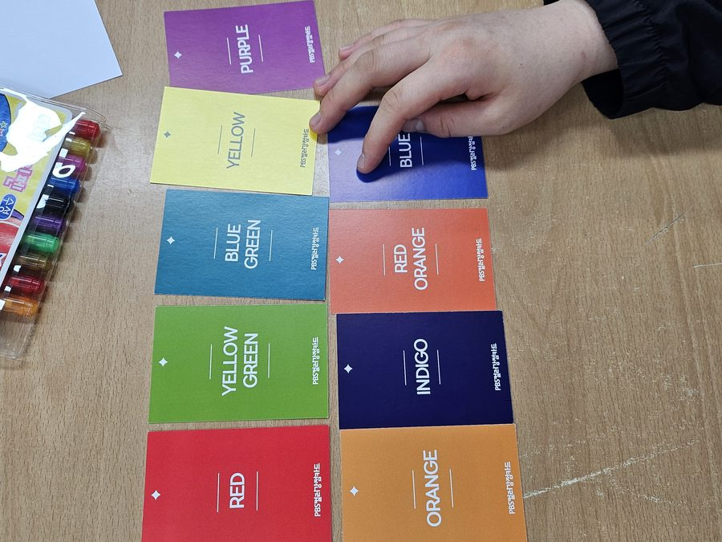
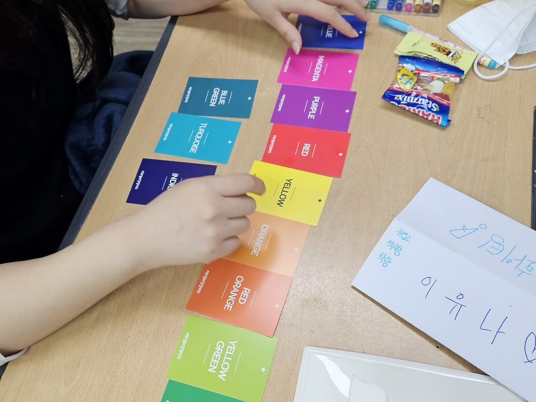
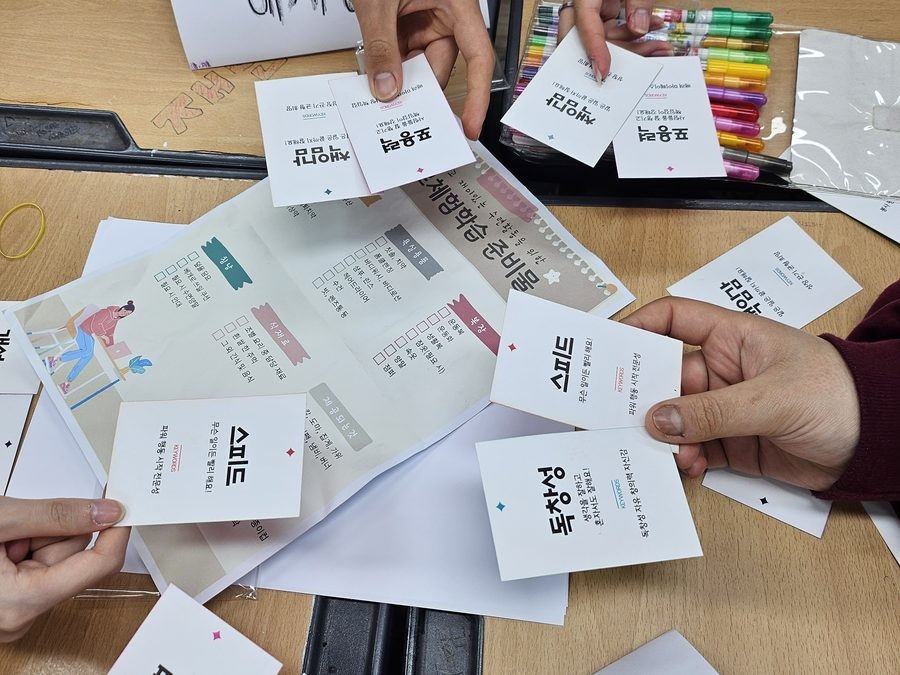
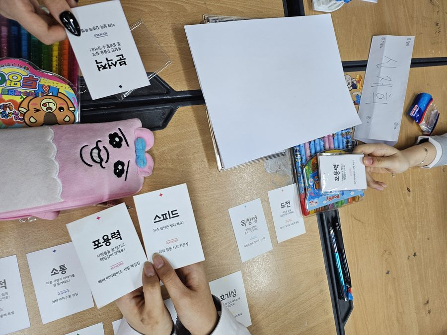
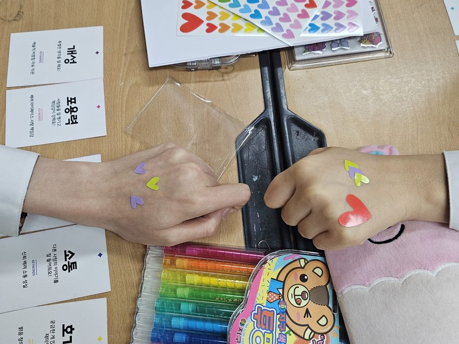
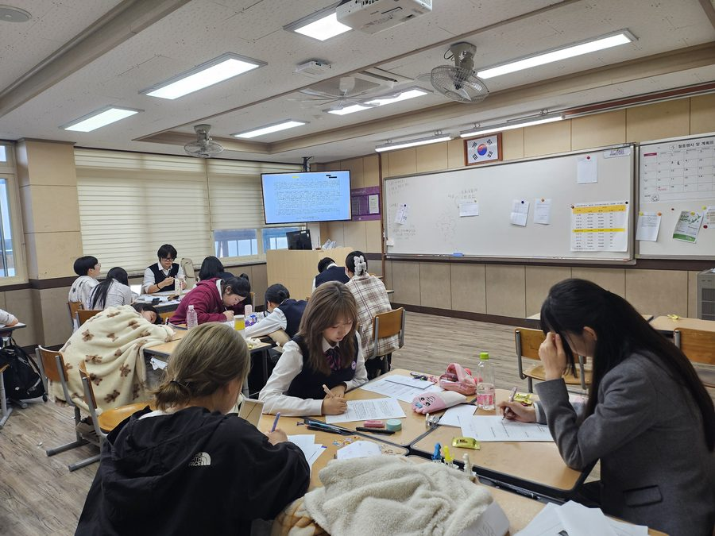

오늘 유난히 끌리는 색이 있으신가요? 그 색에는 이유가 있습니다.
지금 무엇이 부족하고, 무엇을 채우고 싶은지를 말보다 먼저 알려주는 게 색입니다.
카드를 고르고, 왜 그 색이었는지 이야기를 나누고, 그 색으로 무언가를 하나 만듭니다. 설명하기 어려웠던 마음이 손끝에서 정리되는 시간입니다.
공방의 대표 수업
인원과 시간에 맞춰 골라 주세요 — 재료는 공방에서 챙겨 갑니다.
아래는 대표 구성입니다. 대상·계절·예산에 따라 조정해 제안드립니다.
| 프로그램 | 시간 | 결과물 | 추천 대상 · 운영 사례 |
|---|---|---|---|
| 컬러로 알아보는 나의 마음 에너지 | 90~120분 | 컬러별 아이템 1개 | 직원 복지 · 정서 지원 컬러 강점카드 진단 포함 |
| 컬러테라피 & 아로마 감정힐링 | 90분 | 아로마 롤온 1개 | 보호자 · 돌봄 종사자 대상 서귀포장애인복지관 부모교육(2025.5) |
| 휴먼컬러 아로마 | 12시간 (2일) | 진단 결과지 + 실습물 | 심화 과정 한국폴리텍대학 울산캠퍼스 정규 운영(2025.11) |
| 퍼스널컬러 & 향 매칭 | 90~120분 | 맞춤 향수 또는 오일 | 기업 여성 임직원 · 신중년 대상 진단과 제작을 결합한 구성 |
| 컬러 심리 스칸디아모스 | 60~90분 | 화분 또는 액자 1개 | 어르신 대상 1순위 소근육 운동 겸함 · 서귀포노인복지관(2023) |
소요 시간에는 사전 세팅(약 30분)과 뒷정리(약 20분)가 포함되어 있지 않습니다. 이 두 가지는 저희가 별도로 진행합니다.
“내 마음을 알아봐 준다”는 경험이 만족도를 크게 올립니다.
진단 요소가 있어 참여자가 수업을 오래 기억합니다. 퍼스널컬러·휴먼컬러 진단은 한국폴리텍대학 울산캠퍼스 정규 과정(12시간)까지 운영해 본 이력이 있어, 단발 특강부터 심화 과정까지 폭을 넓혀 제안드릴 수 있습니다.
진단 요소가 있어 참여자가 수업을 오래 기억합니다. 퍼스널컬러·휴먼컬러 진단은 한국폴리텍대학 울산캠퍼스 정규 과정(12시간)까지 운영해 본 이력이 있어, 단발 특강부터 심화 과정까지 폭을 넓혀 제안드릴 수 있습니다.
그날의 자리와 결과물
손끝에 남는 것들입니다.






한 번으로 끝나지 않는 수업도 합니다.
초등학교 돌봄교실에서 40주를 이어 진행한 연간 커리큘럼이 이미 짜여 있습니다. 기관 사정에 맞춰 10회 · 20회 · 40회로 조정해 드립니다. 연간 정기 출강 보기 →
초등학교 돌봄교실에서 40주를 이어 진행한 연간 커리큘럼이 이미 짜여 있습니다. 기관 사정에 맞춰 10회 · 20회 · 40회로 조정해 드립니다. 연간 정기 출강 보기 →